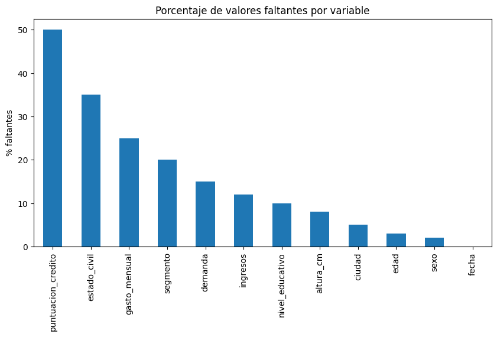
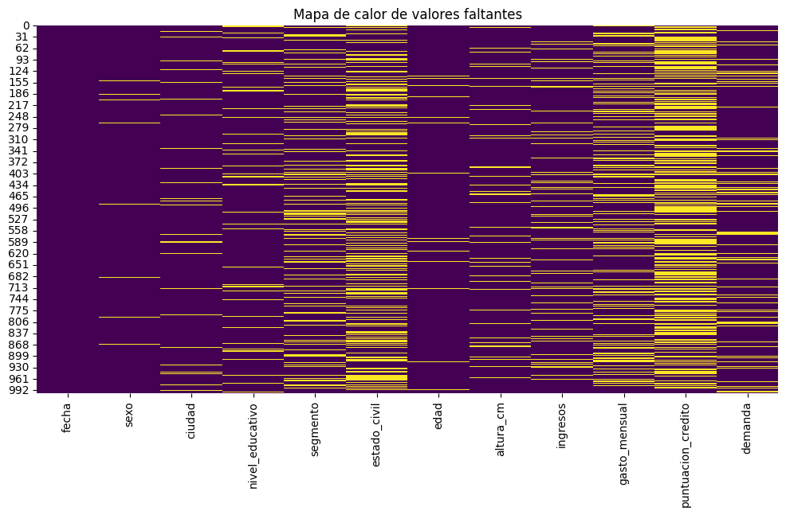
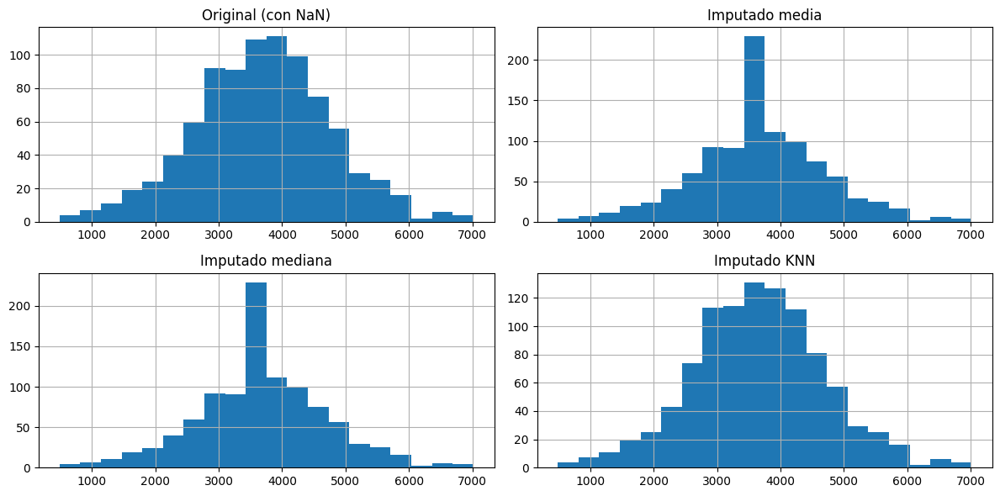
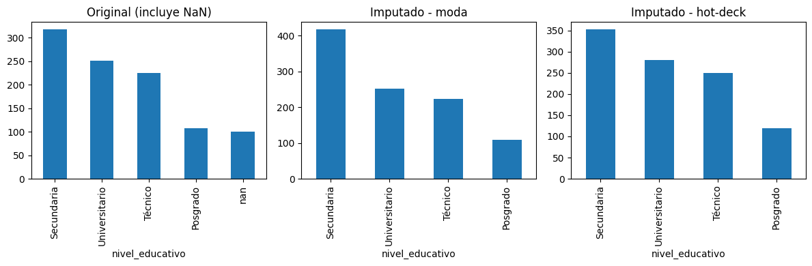
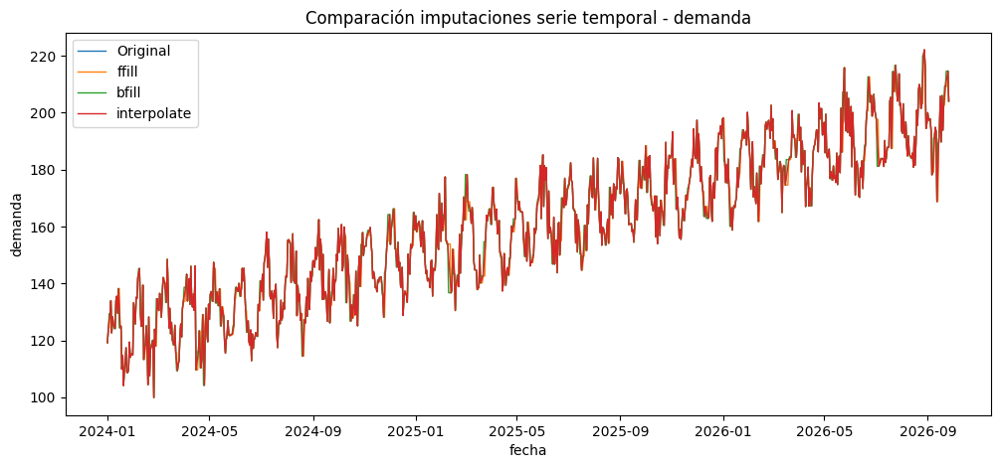

Librerias#
import pandas as pd
import numpy as np
import matplotlib.pyplot as plt
import seaborn as sns
from sklearn.experimental import enable_iterative_imputer
from sklearn.impute import KNNImputer, IterativeImputer
from sklearn.linear_model import BayesianRidge
from sklearn.metrics import mean_absolute_error, mean_squared_error
from scipy.stats import shapiro, ks_2samp, ttest_ind, mannwhitneyu
---------------------------------------------------------------------------
KeyboardInterrupt Traceback (most recent call last)
Cell In[1], line 1
----> 1 import pandas as pd
2 import numpy as np
3 import matplotlib.pyplot as plt
File c:\Users\mateo\miniconda3\envs\ml_lihki\lib\site-packages\pandas\__init__.py:80
77 # let init-time option registration happen
78 import pandas.core.config_init # pyright: ignore[reportUnusedImport] # noqa: F401
---> 80 from pandas.core.api import (
81 # dtype
82 ArrowDtype,
83 Int8Dtype,
84 Int16Dtype,
85 Int32Dtype,
86 Int64Dtype,
87 UInt8Dtype,
88 UInt16Dtype,
89 UInt32Dtype,
90 UInt64Dtype,
91 Float32Dtype,
92 Float64Dtype,
93 CategoricalDtype,
94 PeriodDtype,
95 IntervalDtype,
96 DatetimeTZDtype,
97 StringDtype,
98 BooleanDtype,
99 # missing
100 NA,
101 isna,
102 isnull,
103 notna,
104 notnull,
105 # indexes
106 Index,
107 CategoricalIndex,
108 RangeIndex,
109 MultiIndex,
110 IntervalIndex,
111 TimedeltaIndex,
112 DatetimeIndex,
113 PeriodIndex,
114 IndexSlice,
115 # tseries
116 NaT,
117 Period,
118 period_range,
119 Timedelta,
120 timedelta_range,
121 Timestamp,
122 date_range,
123 bdate_range,
124 Interval,
125 interval_range,
126 DateOffset,
127 # conversion
128 to_numeric,
129 to_datetime,
130 to_timedelta,
131 # misc
132 Flags,
133 Grouper,
134 factorize,
135 unique,
136 value_counts,
137 NamedAgg,
138 array,
139 Categorical,
140 set_eng_float_format,
141 Series,
142 DataFrame,
143 )
145 from pandas.core.dtypes.dtypes import SparseDtype
147 from pandas.tseries.api import infer_freq
File c:\Users\mateo\miniconda3\envs\ml_lihki\lib\site-packages\pandas\core\api.py:47
45 from pandas.core.construction import array
46 from pandas.core.flags import Flags
---> 47 from pandas.core.groupby import (
48 Grouper,
49 NamedAgg,
50 )
51 from pandas.core.indexes.api import (
52 CategoricalIndex,
53 DatetimeIndex,
(...)
59 TimedeltaIndex,
60 )
61 from pandas.core.indexes.datetimes import (
62 bdate_range,
63 date_range,
64 )
File c:\Users\mateo\miniconda3\envs\ml_lihki\lib\site-packages\pandas\core\groupby\__init__.py:1
----> 1 from pandas.core.groupby.generic import (
2 DataFrameGroupBy,
3 NamedAgg,
4 SeriesGroupBy,
5 )
6 from pandas.core.groupby.groupby import GroupBy
7 from pandas.core.groupby.grouper import Grouper
File c:\Users\mateo\miniconda3\envs\ml_lihki\lib\site-packages\pandas\core\groupby\generic.py:60
54 from pandas.core.dtypes.missing import (
55 isna,
56 notna,
57 )
59 from pandas.core import algorithms
---> 60 from pandas.core.apply import (
61 GroupByApply,
62 maybe_mangle_lambdas,
63 reconstruct_func,
64 validate_func_kwargs,
65 warn_alias_replacement,
66 )
67 import pandas.core.common as com
68 from pandas.core.frame import DataFrame
File c:\Users\mateo\miniconda3\envs\ml_lihki\lib\site-packages\pandas\core\apply.py:22
19 from pandas._config import option_context
21 from pandas._libs import lib
---> 22 from pandas._libs.internals import BlockValuesRefs
23 from pandas._typing import (
24 AggFuncType,
25 AggFuncTypeBase,
(...)
31 npt,
32 )
33 from pandas.compat._optional import import_optional_dependency
File <frozen importlib._bootstrap>:398, in parent(self)
KeyboardInterrupt:
Cargar Dataset#
url = "https://raw.githubusercontent.com/Kalbam/Datos/main/base_imputacion_mixta_1000.csv"
df = pd.read_csv(url)
df.head()
| fecha | sexo | ciudad | nivel_educativo | segmento | estado_civil | edad | altura_cm | ingresos | gasto_mensual | puntuacion_credito | demanda | |
|---|---|---|---|---|---|---|---|---|---|---|---|---|
| 0 | 2024-01-01 | F | Medellín | NaN | B | Unión libre | 19.0 | 161.821754 | 3574.753806 | 1832.731832 | 640.465372 | 119.202995 |
| 1 | 2024-01-02 | F | Barranquilla | NaN | B | NaN | 52.0 | 167.819566 | 3163.626815 | NaN | 533.108430 | 124.457874 |
| 2 | 2024-01-03 | M | Bogotá | Secundaria | B | Soltero/a | 38.0 | 165.756219 | 2765.672259 | 1219.535074 | 491.016910 | NaN |
| 3 | 2024-01-04 | F | Bogotá | NaN | B | Casado/a | 57.0 | 160.642670 | 4320.397345 | 1908.324816 | NaN | 129.426792 |
| 4 | 2024-01-05 | M | Cali | Técnico | B | Soltero/a | 67.0 | 151.402909 | NaN | 1887.385697 | 610.213994 | 133.916319 |
Exploracion de Variables#
df.info()
df.describe(include="all")
<class 'pandas.core.frame.DataFrame'>
RangeIndex: 1000 entries, 0 to 999
Data columns (total 12 columns):
# Column Non-Null Count Dtype
--- ------ -------------- -----
0 fecha 1000 non-null object
1 sexo 980 non-null object
2 ciudad 950 non-null object
3 nivel_educativo 900 non-null object
4 segmento 800 non-null object
5 estado_civil 650 non-null object
6 edad 970 non-null float64
7 altura_cm 920 non-null float64
8 ingresos 880 non-null float64
9 gasto_mensual 750 non-null float64
10 puntuacion_credito 500 non-null float64
11 demanda 850 non-null float64
dtypes: float64(6), object(6)
memory usage: 93.9+ KB
| fecha | sexo | ciudad | nivel_educativo | segmento | estado_civil | edad | altura_cm | ingresos | gasto_mensual | puntuacion_credito | demanda | |
|---|---|---|---|---|---|---|---|---|---|---|---|---|
| count | 1000 | 980 | 950 | 900 | 800 | 650 | 970.000000 | 920.000000 | 880.000000 | 750.000000 | 500.000000 | 850.000000 |
| unique | 1000 | 2 | 5 | 4 | 3 | 4 | NaN | NaN | NaN | NaN | NaN | NaN |
| top | 2026-09-26 | F | Bogotá | Secundaria | B | Soltero/a | NaN | NaN | NaN | NaN | NaN | NaN |
| freq | 1 | 518 | 307 | 317 | 457 | 290 | NaN | NaN | NaN | NaN | NaN | NaN |
| mean | NaN | NaN | NaN | NaN | NaN | NaN | 42.861856 | 167.760096 | 3681.294745 | 1687.810749 | 599.077500 | 160.305759 |
| std | NaN | NaN | NaN | NaN | NaN | NaN | 14.621382 | 9.275530 | 1079.326096 | 582.070174 | 79.828186 | 25.357794 |
| min | NaN | NaN | NaN | NaN | NaN | NaN | 18.000000 | 140.000000 | 487.662547 | 100.000000 | 373.657944 | 99.875828 |
| 25% | NaN | NaN | NaN | NaN | NaN | NaN | 30.000000 | 161.488768 | 2999.416229 | 1309.239768 | 544.467843 | 139.505538 |
| 50% | NaN | NaN | NaN | NaN | NaN | NaN | 43.000000 | 167.714614 | 3669.620507 | 1676.193764 | 599.692595 | 160.721251 |
| 75% | NaN | NaN | NaN | NaN | NaN | NaN | 55.000000 | 173.999069 | 4375.093656 | 2063.260990 | 653.345068 | 181.100754 |
| max | NaN | NaN | NaN | NaN | NaN | NaN | 69.000000 | 195.766921 | 7016.246936 | 3532.593603 | 823.539585 | 222.093047 |
Identificacion de Variables#
cualitativas = df.select_dtypes(include=["object"]).columns.tolist()
cuantitativas = df.select_dtypes(include=[np.number]).columns.tolist()
print("Cualitativas:", cualitativas)
print("Cuantitativas:", cuantitativas)
Cualitativas: ['fecha', 'sexo', 'ciudad', 'nivel_educativo', 'segmento', 'estado_civil']
Cuantitativas: ['edad', 'altura_cm', 'ingresos', 'gasto_mensual', 'puntuacion_credito', 'demanda']
Detección de valores faltantes#
faltantes = df.isnull().sum()
faltantes_pct = 100 * df.isnull().mean()
tabla_faltantes = pd.DataFrame({
"faltantes": faltantes,
"%": faltantes_pct
})
print(tabla_faltantes)
faltantes %
fecha 0 0.0
sexo 20 2.0
ciudad 50 5.0
nivel_educativo 100 10.0
segmento 200 20.0
estado_civil 350 35.0
edad 30 3.0
altura_cm 80 8.0
ingresos 120 12.0
gasto_mensual 250 25.0
puntuacion_credito 500 50.0
demanda 150 15.0
Grafico de barras#
plt.figure(figsize=(10,5))
faltantes_pct.sort_values(ascending=False).plot(kind="bar")
plt.title("Porcentaje de valores faltantes por variable")
plt.ylabel("% faltantes")
plt.show()

Mapa de calor de valores faltantes#
plt.figure(figsize=(12,6))
sns.heatmap(df.isnull(), cbar=False, cmap="viridis")
plt.title("Mapa de calor de valores faltantes")
plt.show()

Clasificación de tipo de ausencia#
tipo_ausencia = {}
for col in df.columns:
if faltantes[col] == 0:
tipo_ausencia[col] = "No aplica"
elif faltantes_pct[col] < 5:
tipo_ausencia[col] = "MCAR"
elif 5 <= faltantes_pct[col] < 20:
tipo_ausencia[col] = "MAR"
else:
tipo_ausencia[col] = "MNAR"
print(tipo_ausencia)
{'fecha': 'No aplica', 'sexo': 'MCAR', 'ciudad': 'MAR', 'nivel_educativo': 'MAR', 'segmento': 'MNAR', 'estado_civil': 'MNAR', 'edad': 'MCAR', 'altura_cm': 'MAR', 'ingresos': 'MAR', 'gasto_mensual': 'MNAR', 'puntuacion_credito': 'MNAR', 'demanda': 'MAR'}
Discusión sobre imputabilidad#
discusion = pd.DataFrame({
"variable": df.columns,
"%_faltantes": faltantes_pct.values,
"tipo_ausencia": [tipo_ausencia[c] for c in df.columns],
"riesgo_imputacion": ["medio" if tipo_ausencia[c]=="MAR" else "alto" if tipo_ausencia[c]=="MNAR" else "bajo" for c in df.columns],
"metodo_sugerido": ["media/mediana" if c in cuantitativas else "moda" for c in df.columns]
})
discusion
| variable | %_faltantes | tipo_ausencia | riesgo_imputacion | metodo_sugerido | |
|---|---|---|---|---|---|
| 0 | fecha | 0.0 | No aplica | bajo | moda |
| 1 | sexo | 2.0 | MCAR | bajo | moda |
| 2 | ciudad | 5.0 | MAR | medio | moda |
| 3 | nivel_educativo | 10.0 | MAR | medio | moda |
| 4 | segmento | 20.0 | MNAR | alto | moda |
| 5 | estado_civil | 35.0 | MNAR | alto | moda |
| 6 | edad | 3.0 | MCAR | bajo | media/mediana |
| 7 | altura_cm | 8.0 | MAR | medio | media/mediana |
| 8 | ingresos | 12.0 | MAR | medio | media/mediana |
| 9 | gasto_mensual | 25.0 | MNAR | alto | media/mediana |
| 10 | puntuacion_credito | 50.0 | MNAR | alto | media/mediana |
| 11 | demanda | 15.0 | MAR | medio | media/mediana |
Imputaciones numéricas#
num_cols = df[cuantitativas]
# Media
df_num_mean = df.copy()
df_num_mean[num_cols.columns] = num_cols.fillna(num_cols.mean())
# Mediana
df_num_median = df.copy()
df_num_median[num_cols.columns] = num_cols.fillna(num_cols.median())
# KNN
knn_imp = KNNImputer(n_neighbors=5)
df_num_knn = df.copy()
df_num_knn[num_cols.columns] = knn_imp.fit_transform(num_cols)
# Iterative Imputer con BayesianRidge
iter_imp = IterativeImputer(estimator=BayesianRidge(), random_state=0)
df_num_iter = df.copy()
df_num_iter[num_cols.columns] = iter_imp.fit_transform(num_cols)
c:\Users\mateo\miniconda3\envs\ml_lihki\lib\site-packages\sklearn\impute\_iterative.py:895: ConvergenceWarning: [IterativeImputer] Early stopping criterion not reached.
warnings.warn(
Imputaciones categóricas#
cat_cols = df[cualitativas]
# Moda
df_categ_mode = df.copy()
for col in cualitativas:
moda = df[col].mode(dropna=True)[0]
df_categ_mode[col] = df[col].fillna(moda)
# Hot-deck simple (usar muestreo aleatorio de valores no nulos)
df_categ_hotdeck = df.copy()
for col in cualitativas:
valores = df[col].dropna()
df_categ_hotdeck[col] = df[col].apply(lambda x: np.random.choice(valores) if pd.isnull(x) else x)
# KNN para categóricas (con Label Encoding)
from sklearn.preprocessing import LabelEncoder
df_encoded = df.copy()
encoders = {}
for col in cualitativas:
le = LabelEncoder()
df_encoded[col] = df_encoded[col].astype(str)
df_encoded[col] = le.fit_transform(df_encoded[col])
encoders[col] = le
knn_categ = KNNImputer(n_neighbors=5)
df_knn_categ = pd.DataFrame(knn_categ.fit_transform(df_encoded), columns=df_encoded.columns)
for col in cualitativas:
le = encoders[col]
df_knn_categ[col] = df_knn_categ[col].round().astype(int)
df_knn_categ[col] = le.inverse_transform(df_knn_categ[col])
Imputacion de series#
df_time = df.copy()
df_time["fecha"] = pd.to_datetime(df_time["fecha"])
df_time = df_time.set_index("fecha")
df_time_ffill = df_time.fillna(method="ffill")
df_time_bfill = df_time.fillna(method="bfill")
df_time_interp = df_time.interpolate(method="linear")
C:\Users\mateo\AppData\Local\Temp\ipykernel_19560\1582559107.py:5: FutureWarning: DataFrame.fillna with 'method' is deprecated and will raise in a future version. Use obj.ffill() or obj.bfill() instead.
df_time_ffill = df_time.fillna(method="ffill")
C:\Users\mateo\AppData\Local\Temp\ipykernel_19560\1582559107.py:6: FutureWarning: DataFrame.fillna with 'method' is deprecated and will raise in a future version. Use obj.ffill() or obj.bfill() instead.
df_time_bfill = df_time.fillna(method="bfill")
C:\Users\mateo\AppData\Local\Temp\ipykernel_19560\1582559107.py:7: FutureWarning: DataFrame.interpolate with object dtype is deprecated and will raise in a future version. Call obj.infer_objects(copy=False) before interpolating instead.
df_time_interp = df_time.interpolate(method="linear")
Gráficos comparativos numéricas#
col = "ingresos"
plt.figure(figsize=(12,6))
plt.subplot(2,2,1)
df[col].hist(bins=20)
plt.title("Original (con NaN)")
plt.subplot(2,2,2)
df_num_mean[col].hist(bins=20)
plt.title("Imputado media")
plt.subplot(2,2,3)
df_num_median[col].hist(bins=20)
plt.title("Imputado mediana")
plt.subplot(2,2,4)
df_num_knn[col].hist(bins=20)
plt.title("Imputado KNN")
plt.tight_layout()
plt.show()

Gráficos categóricas#
col = "nivel_educativo"
plt.figure(figsize=(12,4))
plt.subplot(1,3,1)
df[col].value_counts(dropna=False).plot(kind="bar")
plt.title("Original (incluye NaN)")
plt.subplot(1,3,2)
df_categ_mode[col].value_counts().plot(kind="bar")
plt.title("Imputado - moda")
plt.subplot(1,3,3)
df_categ_hotdeck[col].value_counts().plot(kind="bar")
plt.title("Imputado - hot-deck")
plt.tight_layout()
plt.show()

Gráficos series temporales#
plt.figure(figsize=(12,5))
plt.plot(df_time["demanda"], label="Original", linewidth=1)
plt.plot(df_time_ffill["demanda"], label="ffill", linewidth=1)
plt.plot(df_time_bfill["demanda"], label="bfill", linewidth=1)
plt.plot(df_time_interp["demanda"], label="interpolate", linewidth=1)
plt.legend()
plt.title("Comparación imputaciones serie temporal - demanda")
plt.xlabel("fecha")
plt.ylabel("demanda")
plt.show()

Evaluación estadística#
resumen_eval = []
for col in cuantitativas:
obs = df[col].dropna()
if len(obs) == 0: continue
# Normalidad
stat, p_sh = shapiro(obs)
normal = p_sh > 0.05
# Comparar imputaciones (media como ejemplo)
imputados = df_num_mean.loc[df[col].isnull(), col]
if len(imputados) > 0:
stat_ks, p_ks = ks_2samp(obs, imputados)
if normal:
stat_test, p_test = ttest_ind(obs, imputados, equal_var=False)
test_used = "t-test"
else:
stat_test, p_test = mannwhitneyu(obs, imputados)
test_used = "Mann-Whitney"
resumen_eval.append([col, normal, p_sh, p_ks, test_used, p_test])
resumen_eval = pd.DataFrame(resumen_eval, columns=["variable","normal","p_shapiro","p_ks","test","p_valor"])
resumen_eval
c:\Users\mateo\miniconda3\envs\ml_lihki\lib\site-packages\scipy\stats\_axis_nan_policy.py:531: RuntimeWarning: Precision loss occurred in moment calculation due to catastrophic cancellation. This occurs when the data are nearly identical. Results may be unreliable.
res = hypotest_fun_out(*samples, **kwds)
| variable | normal | p_shapiro | p_ks | test | p_valor | |
|---|---|---|---|---|---|---|
| 0 | edad | False | 1.132185e-15 | 1.340747e-07 | Mann-Whitney | 0.817478 |
| 1 | altura_cm | True | 5.911472e-01 | 1.338285e-17 | t-test | 1.000000 |
| 2 | ingresos | True | 3.244752e-01 | 5.477614e-25 | t-test | 1.000000 |
| 3 | gasto_mensual | True | 6.752081e-01 | 1.100156e-44 | t-test | 1.000000 |
| 4 | puntuacion_credito | True | 9.405074e-01 | 3.933574e-58 | t-test | 1.000000 |
| 5 | demanda | False | 1.129628e-07 | 2.550749e-30 | Mann-Whitney | 0.853906 |
Resumen Final#
resumen_final = pd.DataFrame({
"variable": df.columns,
"%_nulos": faltantes_pct.values,
"tipo_ausencia": [tipo_ausencia[c] for c in df.columns],
"metodo_sugerido": ["media/mediana" if c in cuantitativas else "moda" for c in df.columns]
})
resumen_final.to_csv("resumen_imputacion.csv", index=False)
print("Resumen guardado en resumen_imputacion.csv")
resumen_final
Resumen guardado en resumen_imputacion.csv
| variable | %_nulos | tipo_ausencia | metodo_sugerido | |
|---|---|---|---|---|
| 0 | fecha | 0.0 | No aplica | moda |
| 1 | sexo | 2.0 | MCAR | moda |
| 2 | ciudad | 5.0 | MAR | moda |
| 3 | nivel_educativo | 10.0 | MAR | moda |
| 4 | segmento | 20.0 | MNAR | moda |
| 5 | estado_civil | 35.0 | MNAR | moda |
| 6 | edad | 3.0 | MCAR | media/mediana |
| 7 | altura_cm | 8.0 | MAR | media/mediana |
| 8 | ingresos | 12.0 | MAR | media/mediana |
| 9 | gasto_mensual | 25.0 | MNAR | media/mediana |
| 10 | puntuacion_credito | 50.0 | MNAR | media/mediana |
| 11 | demanda | 15.0 | MAR | media/mediana |